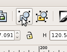
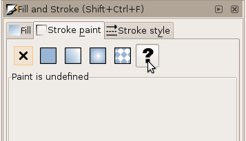
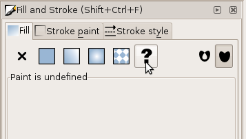

MBLogic
for an open world in automation
MBLogic
for an open world in automation
Other Editing Features
Grouping Objects
It can be convenient to group objects so they can be moved and changed as a single unit. To group several objects together:
1) Select the objects.
2) Click the "group" button on the tool bar, or select group from the menu ("Object", "Group").

Removing the Fill and Stroke Properties from Objects
It is sometimes necessary to remove the "fill" or "stroke" properties from an object. The "stroke" is the outline of an object, while the "fill" is the interior colour. If an object has a fill or stroke already set, those settings will over ride the ones set at a higher level. Also, it is sometimes desirable for background art to have either no fill or else no stroke visible (if there is both no fill and no stroke, then the object will be invisible).
However, setting the fill or stroke to "none" is not the same as simply removing it. When the fill or stroke are removed ("unset"), the object can inherit properties from outer levels (if any are present). When fill or stroke are set to "none", then the fill or stroke are disabled for that object and cannot be inherited from outer levels.
To remove the fill or stroke:
- Enable the fill and stroke menu ("Object", "Fill and Stroke").
- Select the object.
- Select either the "Fill" or "Stroke Paint" tab.
- Select "unset paint" (this should be a question mark icon).
To set them to "none", perform the same steps as above, except for the final step select "none" instead of "unset" (this should be an "X" icon).
 
Editing Hints
- When editing drawings, it is usually convenient to turn off the background layer. This will allow you to select drawing objects without interference from the background rectangle. Don't forget to turn the background back on when you are finished editing.
- If your background rectangle is the same colour as the editor background, use the page properties to turn on the drawing border. This makes it easy to see the edge of the drawing when you are aligning your drawing objects.
- Double check whether you have the correct layers turned on when you are finished with a drawing. These layer selections determine the default appearance of the drawing when the web page starts up.
- When you are about to add clip art objects to a drawing, make sure you have selected the correct layer as the current layer. If you have the wrong layer selected, your objects will end up on the wrong layer.
- Give your ids meaningful names so that you can more readily remember what the do later.